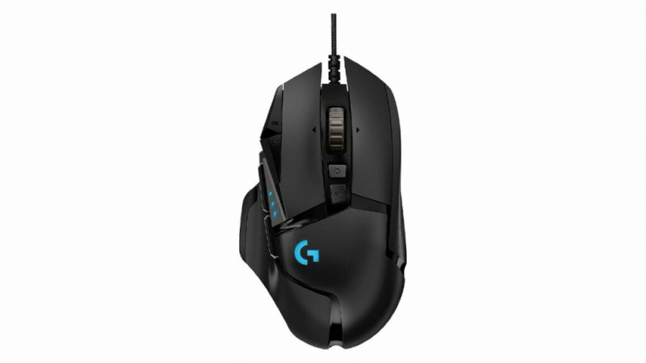
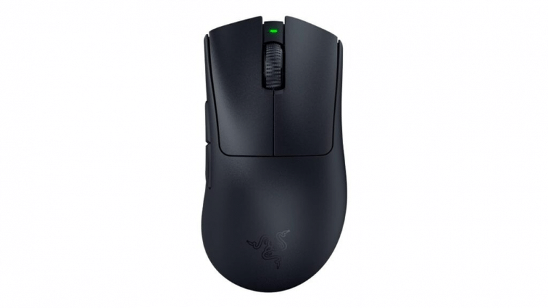
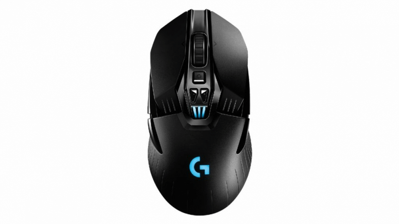
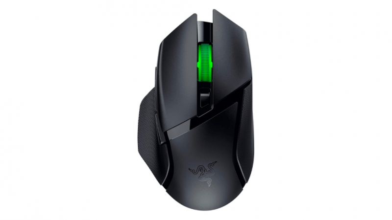
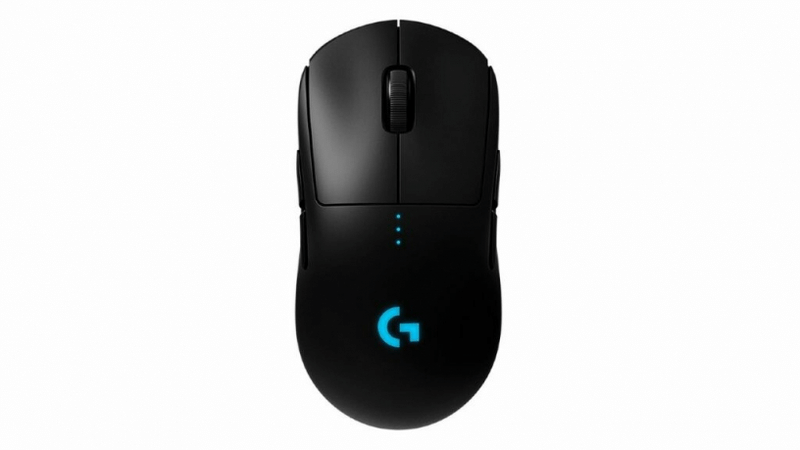

| Melhore mouses gamers 2025 | ||||
|---|---|---|---|---|
| Modelo | Características | Valor | Classificação | Imagem |
| Logitech G502 hero | O G502 Hero da Logitech é um mouse gamer com fio, que conta com um design robusto e moderno, sendo bastante resistente sem ser tão pesado, contem 2 botôes laterais. | ≈400R$ | Melhor mouse gamer |  |
| Razer Deathadder V3 Pro | Segunda melhor opção de mouse gamer se destaca como um modelo sem fio com design robusto ainda que leve. O Deathadder V3 Pro da Razer conta com um formato ergonômico de apenas 63 gramas, tendo 0,2 ms de tempo de resposta e durabilidade para até 90 milhões de cliques | ≈1300R$ | Modelo premium |  |
| Logitech G903 LIGHTSPEED | Considerado por muitos o melhor mouse sem fio da Logitech, o G903 LIGHTSPEED conta com o sensor ótico HERO 25K, que contribui para sua precisão e para uma grande variação de DPI que vai de 200 a 25.600. Além disso, suas especificações o destacam como um mouse altamente eficiente, com aceleração de 40G, velocidade de 400 IPS e frequência de resposta de 1000Hz. | ≈600R$ | Mouse sem fio completo |  |
| Razer Basilisk V3 X HyperSpeed | Já para quem busca uma opção de mouse sem fio com um valor mais baixo, mas também de alta qualidade, o Basilisk V3 X HyperSpeed é o modelo da Razer que equilibra praticidade com performance. Sendo um modelo mais leve que o modelo anterior, pesando 83 g, o Basilisk V3 X se movimenta com facilidade em diferentes tipos de mousepad. | ≈650R$ | Opção versatil |  |
| Logitech G Pro | Um dos modelos mais renomados ao falarmos dos melhores mouses gamer, o Logitech G Pro é uma escolha segura há alguns anos, e se mantém como um ótimo modelo até os dias de hoje. Com um design simples, ergonômico e ambidestro, o G Pro é um mouse wireless com taxa de transmissão de 1 ms, 400 IPS de aceleração, aliado a uma boa eficiência energética que garante uma duração de bateria para mais de uma semana. | ≈500R$ | Leve, preciso e com boa autonomia de bateria |  |